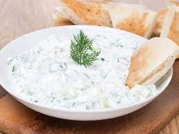

Tzatziki

Description
Make our simple tzatziki sauce.
This fresh and simple Greek dip is perfect served with toasted pitta bread for a party platter or served with slow roast lamb
Ingredients
- ½ cucumber, halved and deseeded
- 170g pot Greek yogurt
- 1 small garlic clove, crushed
- handful mint leaves, chopped
Steps
- Coarsely grate the cucumber, sprinkle with a pinch of salt and squeeze out all the liquid.
- Tip into a bowl with the yogurt, garlic and mint, and mix well
- Tip into a bowl with the yogurt, garlic and mint, and mix well